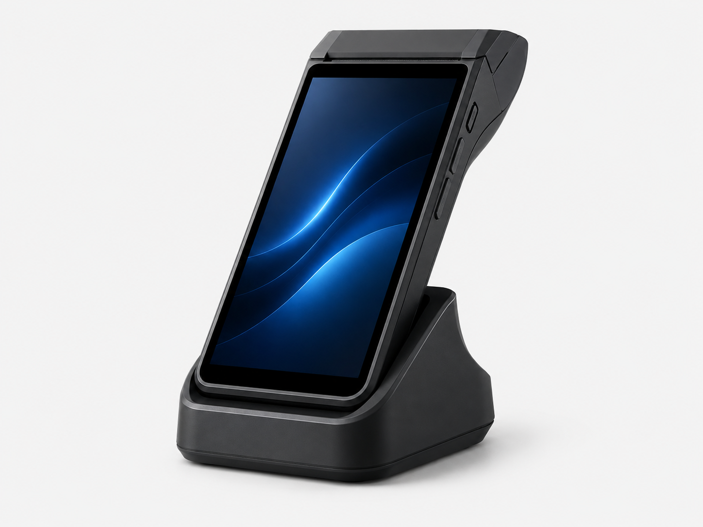
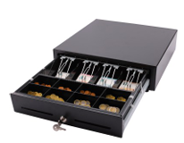

Gastronomie und Dienstleistung
Für Gastronomie, Restaurant, Café, Friseur und Barbershop werden Kassensoftware, Bedienabläufe und Hardware passend zum Betrieb geplant.
Flowix Solutions liefert, installiert und betreut moderne Kassensysteme für Handel, Gastronomie und Dienstleister.

Stabile Systeme für den täglichen Betrieb.
Sauber eingerichtet und sofort nutzbar.
Persönliche Hilfe, wenn es darauf ankommt.
Regelmäßige Betreuung.
Stationäre und leistungsstarke Lösungen für Handel, Gastro und Dienstleister.
Mehr erfahren →
Flexible Geräte für mobile Verkaufssituationen, Events und Serviceflächen.
Mehr erfahren →
Drucker, Scanner, Kassenladen, Terminals und passende Peripherie.
Mehr erfahren →Flowix Solutions bringt mehrjährige Erfahrung im Kassenbereich mit. Von Hardware und Software bis Einrichtung, Support und Fehleranalyse.
Mehr über unsFlowix Solutions unterstützt Unternehmen im Raum Stuttgart und Filderstadt bei Auswahl, Einrichtung und Betreuung moderner NORIS Kassensysteme.
Kassensysteme ansehen
Beschreiben Sie kurz Ihre Anforderungen. Wir melden uns mit einer realistischen Einschätzung.
Flowix Solutions begleitet Betriebe von der Kassensystem-Beratung bis zur Einrichtung einer passenden, TSE-konformen Lösung.
Für Gastronomie, Restaurant, Café, Friseur und Barbershop werden Kassensoftware, Bedienabläufe und Hardware passend zum Betrieb geplant.
Ein Kassensystem mit Kartenzahlung kann als abgestimmte Gesamtlösung aus Kasse, TSE, Drucker, Kassenlade und Zahlungsterminal umgesetzt werden.
Beratung und Vor-Ort-Service für Kassensysteme in Stuttgart, Filderstadt, Esslingen, Leinfelden-Echterdingen, Böblingen und Sindelfingen. Auch NORIS Kassensysteme werden passend zum Bedarf eingerichtet.
Grundsätzlich ja: Wer aufzeichnungspflichtige Geschäftsvorfälle mit einem elektronischen Kassensystem erfasst, muss das System und die digitalen Aufzeichnungen durch eine zertifizierte technische Sicherheitseinrichtung schützen. Gesetzliche Ausnahmen und der konkrete Einzelfall sollten steuerlich geprüft werden.
Ja. Flowix Solutions übernimmt auf Wunsch die Installation, technische Einrichtung und Einweisung in das Kassensystem. Der Umfang der Schulung wird an den Betrieb und die eingesetzten Funktionen angepasst.
Der regionale Schwerpunkt liegt in Stuttgart, Filderstadt, Esslingen, Leinfelden-Echterdingen, Böblingen und Sindelfingen sowie im jeweiligen Umland. Beratung und Support sind je nach Anliegen auch remote möglich.
Ja. Vor einem Austausch werden das vorhandene System, die benötigten Funktionen, vorhandene Hardware und mögliche Datenübernahmen geprüft. Anschließend wird eine passende Ablösung geplant, ohne unnötige Unterbrechungen im laufenden Betrieb.
Ja. Für Installation, Inbetriebnahme, Hardwaretausch und vereinbarte Serviceeinsätze bietet Flowix Solutions Vor-Ort-Service in Stuttgart, Filderstadt und der umliegenden Region an.